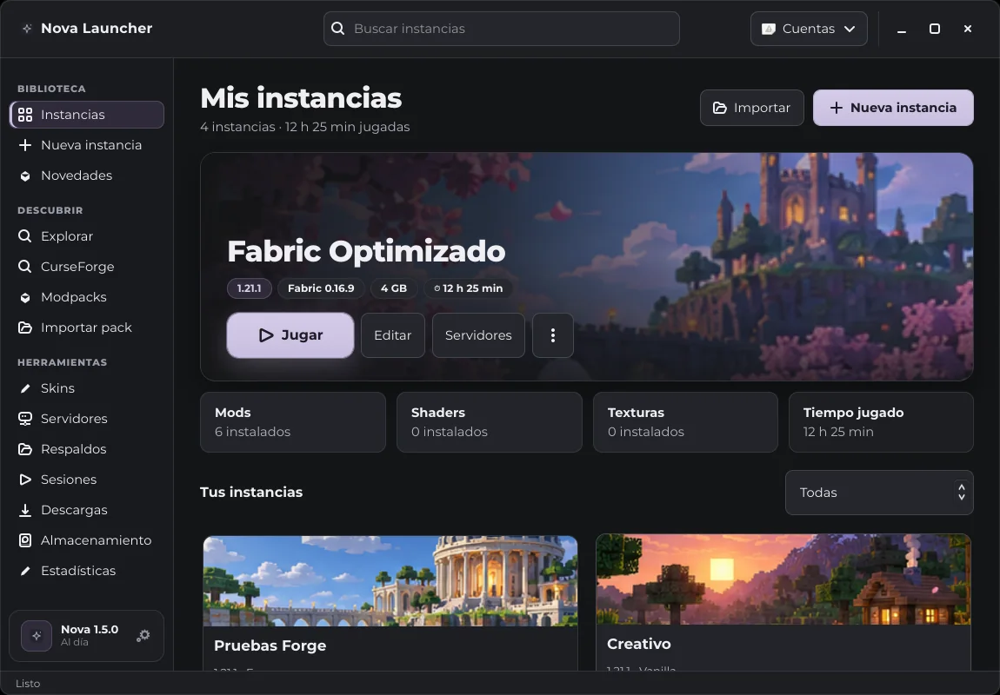
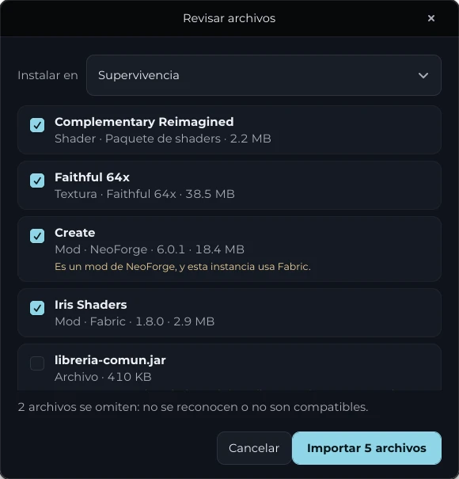
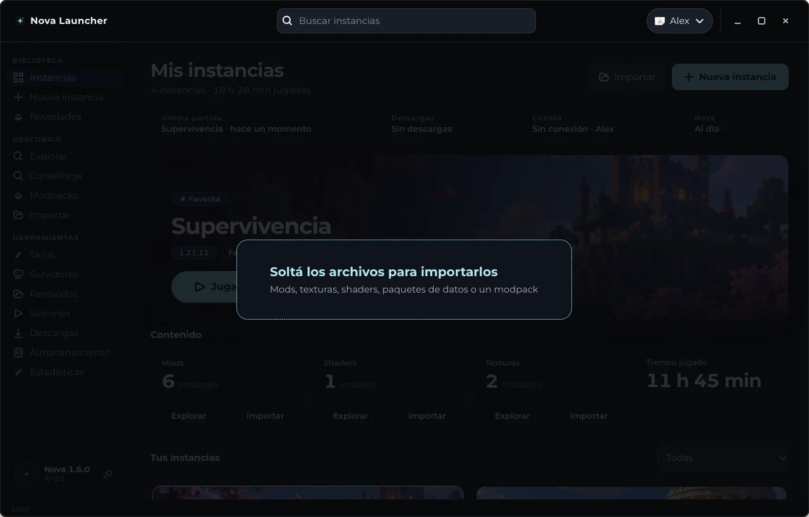
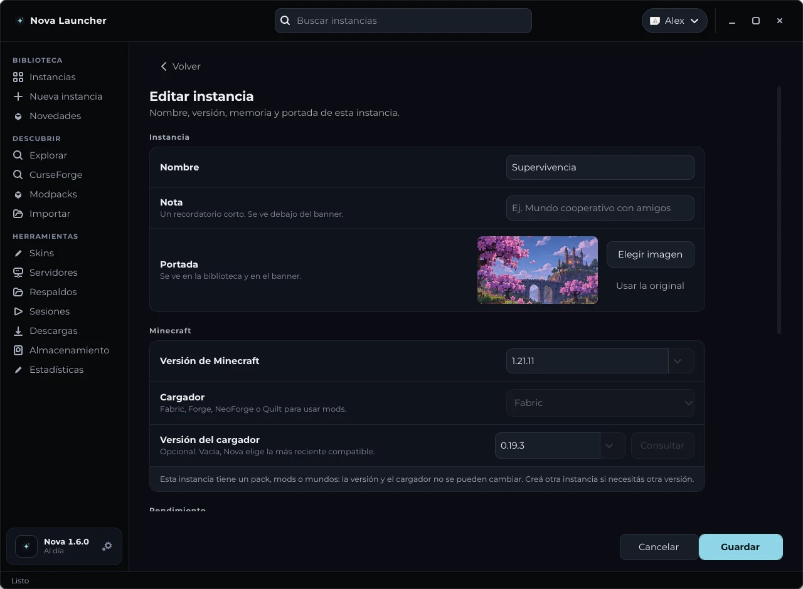
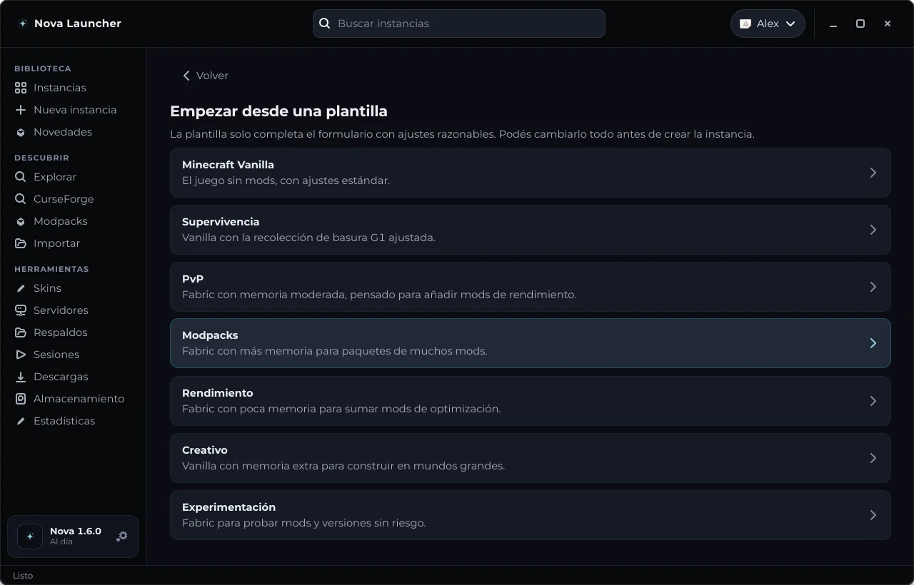
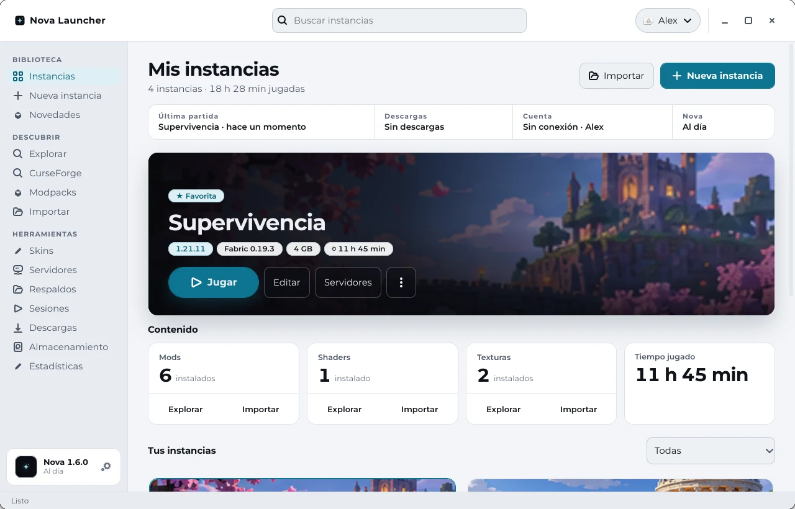

Versión estable · 1.6.0
Tus mods.
Tus mundos.
Un solo launcher.
Nova Launcher organiza tus instancias de Minecraft Java: instalá mods, importá los que ya tenés, revisá que todo funcione, guardá respaldos verificados y entrá a tus servidores.

- Vanilla, Fabric, Forge, NeoForge y Quiltuna instancia para cada partida
- Modrinth, CurseForge y tu equipomods, modpacks, shaders y texturas
- Windows x64 y Fedorainstaladores con SHA-256
Todo lo que necesitás para jugar, en un solo lugar
-
Instancias separadas
Cada partida con su versión, cargador, RAM y Java. Plantillas para empezar rápido y perfiles que podés exportar e importar.
-
Mods sin vueltas
Buscá en Modrinth y, con tu propia clave, en CurseForge. Nova revisa dependencias, actualiza en lote y deja volver a la versión anterior.
-
Importá lo que ya tenés
Sumá mods, texturas, shaders y paquetes de datos desde archivos de tu equipo, o abrí un modpack. Nova revisa cada archivo antes de copiarlo.
-
Salud y mods
Lee los metadatos de tus mods y avisa de dependencias faltantes, cargador o versión incorrectos y duplicados. Solo marca lo que puede comprobar.
-
Respaldos verificados
Copias manuales o automáticas con suma SHA-256 por archivo. Verificá su integridad y restaurá como una instancia separada.
-
Servidores
Entrá directo con la versión y los mods de la instancia, y comprobá si el servidor responde antes de abrir el juego.
-
Editor de skins
Importá un PNG o dibujá por partes y capas. Equipá la skin en una instancia compatible.
Importá lo que ya tenés en tu equipo
Elegí los archivos o arrastralos a la ventana. Nova mira dentro de cada uno, te dice qué es y a qué instancia va, y solo entonces lo copia.
- Mods
.jarde Fabric, Quilt, Forge o NeoForge- Texturas
.zipconpack.mcmeta- Shaders
.zipcon la carpetashaders- Datos
- paquetes de datos para un mundo de la instancia
- Modpacks
.mrpacko ZIP de CurseForge, como instancia nueva
- Avisa si un mod es de otro cargador o si la instancia es Vanilla.
- Nunca pisa un archivo: si ya está, lo omite; si cambió, guarda una copia numerada.
- Copia por pasos, así que una interrupción no deja archivos a medias.

Capturas reales de Nova
Arrastrá y soltá
Soltá archivos sobre la ventana y Nova los revisa en el momento. También podés usar el botón Importar de cada estante, o Ctrl + O.

Ajustes claros, sin pestañas
Nombre, portada, versión, memoria y Java en secciones. El formulario se desplaza solo y los botones Guardar y Cancelar quedan siempre a la vista.

Empezá desde una plantilla
Supervivencia, PvP, rendimiento, creativo y más. Completan el formulario con ajustes razonables y no asignan más de la mitad de tu RAM.

Oscuro por defecto, claro si lo preferís
Elegí el tema en Ajustes. Las animaciones respetan la configuración de tu escritorio.

Instalá Nova
Fedora
Descargá el RPM y ejecutá este comando donde lo guardaste. Después abrí Nova Launcher desde el menú de aplicaciones.
Windows x64
Descargá el instalador, abrilo y buscá Nova Launcher en Inicio. Como el instalador no está firmado, Windows puede mostrar una advertencia: comprobá la suma SHA-256 antes de continuar.
sudo dnf install "$(xdg-user-dir DOWNLOAD)/nova-launcher-1.6.0-1.noarch.rpm"sudo dnf install ./nova-launcher-1.6.0-1.noarch.rpmRPM sin firma. El primer arranque de Minecraft descarga los archivos del juego.
Lo que suelen preguntar
¿Es un launcher oficial de Minecraft?
No. Nova es un proyecto de terceros, sin afiliación ni aprobación de Mojang o Microsoft. Minecraft es una marca de sus titulares.
¿Puedo jugar sin cuenta de Microsoft?
Sí, con perfiles sin conexión. El inicio de sesión con Microsoft necesita un ID de aplicación aprobado para Minecraft Services; todavía no se probó de punta a punta.
¿Qué es la cuenta Nova?
Es la cuenta de Nova Studios, la misma de Nova Music. Desde el menú Cuentas podés iniciar sesión con Nova: se abre el navegador, aprobás un código y volvés. La contraseña nunca pasa por el launcher. No es una cuenta de Minecraft y el launcher no tiene planes de pago.
¿Qué pasa con los archivos que importo?
Nova los copia tal cual a la carpeta de la instancia; no los modifica ni los descomprime. Si un archivo no se reconoce o no es compatible, te lo dice y no lo copia. Lo que ya estaba instalado nunca se pisa.
¿Dónde se guardan mis datos?
En tu computadora: ~/.local/share/nova-launcher en Fedora y %LOCALAPPDATA%\nova-launcher en Windows. Las estadísticas no salen de tu equipo y las contraseñas no se guardan.
¿Cómo sé que el instalador es el original?
Cada archivo de la release tiene su suma SHA-256. Nova también verifica la suma de las actualizaciones que descarga. Los instaladores todavía no tienen firma de código.
En Windows, antes de abrirlo ejecutá en PowerShell Get-FileHash .\nova-launcher-…-windows-x64-setup.exe -Algorithm SHA256 y comprobá que el resultado coincide con el archivo .sha256 de la release. Si coincide y SmartScreen avisa, elegí «Más información → Ejecutar de todos modos».
¿Es de código abierto?
Sí. Nova es software libre bajo la licencia GPL-3.0-or-later: podés usarlo, estudiarlo, modificarlo y compartirlo, y las versiones modificadas que distribuyas deben mantener la misma licencia. Los avisos de las dependencias están en THIRD_PARTY_LICENSES.md.
¿Dónde pido ayuda o reporto un error?
En GitHub. Desde Ajustes podés copiar un reporte sin datos personales.